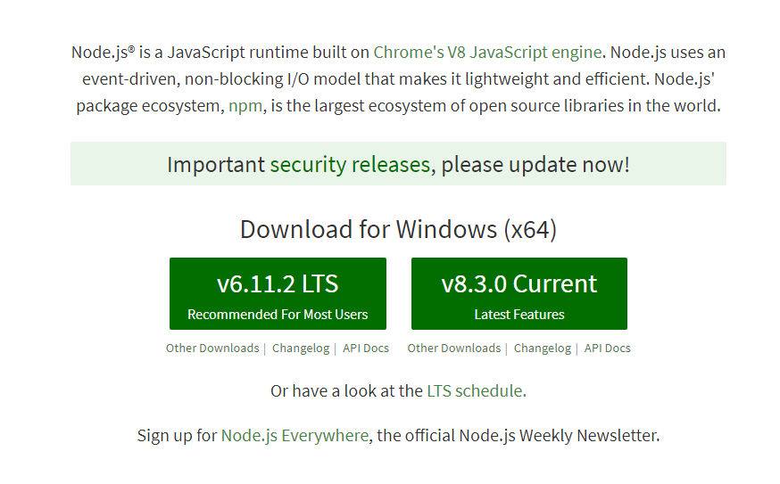
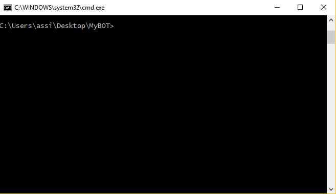
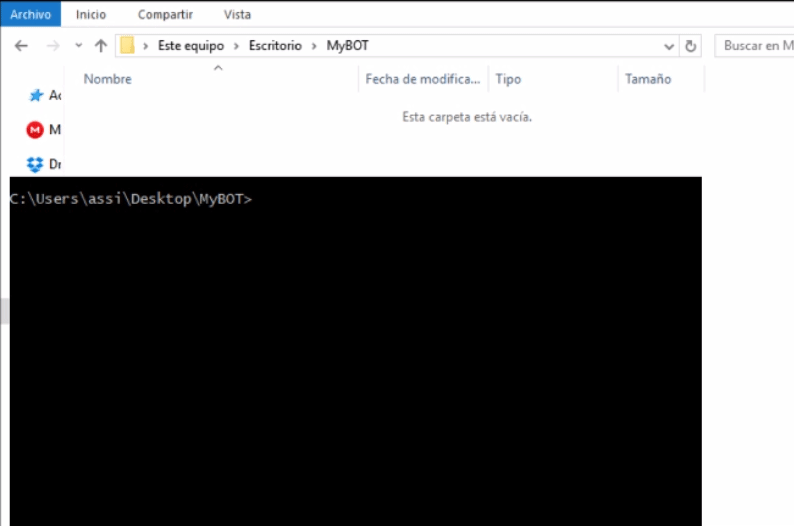
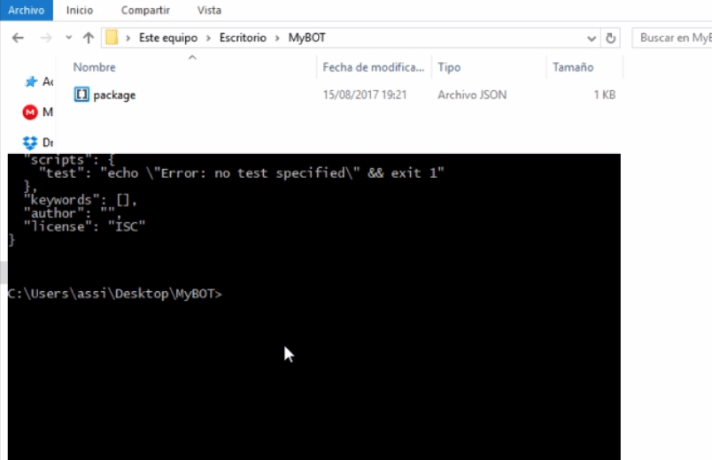

Instalacion y uso de un editor de codigo
Creacion de su cuenta App y de Bot
Instalacion de Discord.js y Node.js ◄
Introducción a un Bot de musica/audio
Para usar discord.js y empezar a programar necesitará un par de cosas instaladas. Por lo menos:
Node es un entorno de ejecución para JavaScript, usa un modelo de operaciones E/S sin bloqueo y orientado a eventos, que lo hace liviano y eficiente.
Bien para instalar Node, iremos la siguiente enlace Node.js descarga.

Descargar la versión recomendada e instalar en su PC.
NOTA: Reinicié su PC si es necesario.
Una vez que tenga el software requerido, el siguiente paso es preparar un espacio para su código.

Si no pudo abrir la consola, sigue estos pasos:
Listo, ahora vayamos al siguiente paso!
Una vez dentro de la consola con la ruta de la carpeta, vamos a instalar Discord.js.
Pero primero vamos a inicializar esta carpeta con NPM, esto asegurará que cualquier otro módulo instalado se instale dentro de la carpeta.
Para instalar escribir "npm init -y" y luego pulse enter dentro de la consola.

Se creara un nuevo archivo llamado "package.json", si desea saber mas información sobre package.json haga clic aquí.
Y ahora instalamos Discord.js a través de NPM, el Node Package Manager:
Escribir "npm install discord.js --save" en la consola.

NOTA: "--save" es para asegurar que se guarde en el package.json que creamos anteriormente.
La instalación es muy rapida y mostrara una gran cantidad de cosas en la pantalla de la consola. A menos que tengas un gran mensaje rojo que diga "not found", o el package.json no encontrado.
Una vez completada la instalación de Discord.js, nos fijamos en la carpeta y se dará cuenta de que hay una nueva carpeta creada llamada "node_modules". Esto contiene todos los paquetes instalados para su proyecto.
Significa que Discord.js se a instalado correctamente. ¡Bien echo!, ahora vayamos a poner en marcha su primer bot. Siguiente
Si tiene alguna pregunta y/o duda después de leer esta guía, ingrese al servidor guía en Discord: MyBOT - Server guía.
Sitio web github/Crater